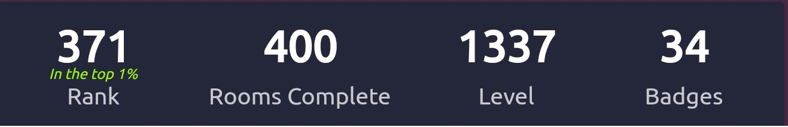

Graphic Design
I'm a graphic designer with a strong background in traditional art. I've always had a
passion
for
creating
visually stunning designs that communicate a message effectively. My experience in
traditional
art has
given
me a unique perspective and skillset that I apply to my digital design work.
Over the past decade plus, I've become reasonably proficient in Photoshop. I've worked on a
diverse
range of projects,
including branding design, marketing collateral, website design, and packaging. I have a
keen
eye
for detail and a strong focus on guideline principles, which ensures that every element of
my
designs
is cohesive and effective.
I enjoy the challenge of creating designs that not only look great but also have a purpose
and
meaning
behind them.
I'm constantly exploring new techniques and software to keep up-to-date with the latest
trends
and
innovations
in the industry. Overall, my experience in traditional art and digital design, combined with
my
extensive Photoshop
knowledge, makes me a strong asset to any team seeking a skilled and passionate graphic
designer.
Drafted using Sage
Windows
I started using Windows-based PCs for the first time on a regular basis sometime around 2003
with XP.
I took an early interest into web development with HTML and CSS around the time Myspace was
launched
and got my early start at the age of 8 or 9 learning how to make (overly complex) profile
designs.
Once I managed to get a slightly better PC, I started delving into gaming and ended up with
a
virus
called WiniBlueSoft
from downloading a rogue torrent. This was the event that led me to start digging more
into the filesystem hierarchy in a drawn-out attempt to try and "fight off" the virus.
Whilst my attempts to thwart the virus were ultimately in vain, I continued to have an interest in having a deeper understanding of how the operating system functions as a whole. This is what inevitably likely led me down the path I now find myself on.
Drafted using Sage
Technical Analysis
As all investors tend to do, I tried to find the closest thing to a holy grail I could when trying to navigate the markets in a way that wouldn't make me lose my head. I can't say what exactly drew me to technical analysis out the gate, but I continue to constantly find new things that keep me engaged.
My journey as an analyst originally began focusing on a combination of fundamental and a poor foundation of technicals that eventually incorporated a sentiment aspect as well. After trying and failing to make consistent returns focusing on growth and product potential of emerging startups in the cryptocurrency industry, my rabbit hole into Bitcoin eventually led me to the concept of price cycles.
Since this discovery, my system has continued to become more and more price action focused as over the years as it seems that the market can usually tell you the news happening the world far before the television set can. My approach can be compared to the system used by Marty Zweig.
I have over 7 years of weekly experience analysing technicals across a wide range of markets
including
cryptocurrencies, forex, equities, indices
as well as a truncated public journal of my calls and research into the markets through my
twitter
account.
The indicators I rely on are non-proprietary:
Price / Volume / S&R / Moving Averages / Ichimoku
Bollinger Bands / AVWAP / VPVR / (Stoch+Std) RSI
Drafted using Sage
Pentesting w/ Kali Linux
Frameworks:
armitage / autopsy / brim / burpsuite / chisel / covenant
eztools / gophish / impacket / kape / kibana / metasploit /
osquery / procdot / redline / remnux / responder / sherlock /
sysinternals / volatility / velociraptor / zeek / zap
Commandline:
capa / ffuf / gobuster / hashid / hydra / john /
linpeas / mimikatz / nmap / sherlock / sublist3r / sqlmap

TryHackMe
Drafted using Sage
Livestreaming
I am an experienced streamer of nearly 2 years.
I'm well acquainted with handling complex OBS
scenes/setups to create aesthetically pleasing yet confluent designs. Livestreaming has
offered
me a great outlet for improving my ability to perform under pressure whether through solo
tasks
or multitasking in front of random
audiences as well as aiding me in developing stronger social skills through viewer
engagement.
Drafted using Sage
Fitness & Nutrition
I have an intermediate foundational understanding of a variety of topics related to strength
training
e.g., diet structuring, optimizing workout plans, managing supplement cycles
As well as over 4 years of weekly personal experience training (cut short by a common weightlifting injury, i.e. inguinal hernia)
Drafted using Sage